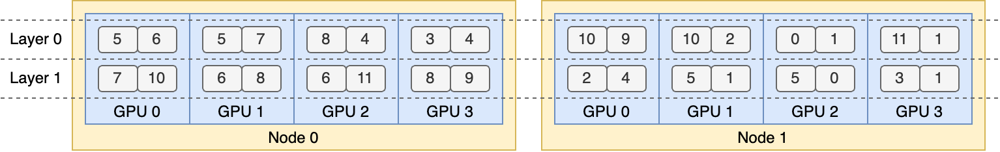

Expert Parallelism Load Balancer (EPLB)
Why We Need EPLB?
When using Expert Parallelism (EP), different experts are assigned to different NPUs. Given that the load of various experts may vary depending on the current workload, it is crucial to maintain balanced loads across different NPUs. We adopt a redundant experts strategy by duplicating heavily-loaded experts. Then, we heuristically pack these duplicated experts onto NPUs to ensure load balancing across them. Moreover, thanks to the group-limited expert routing used in MoE models, we also attempt to place experts of the same group on the same node to reduce inter-node data traffic, whenever possible.
To facilitate reproduction and deployment, vLLM Ascend supports the deployed EP load balancing algorithm in vllm_ascend/eplb/core/policy. The algorithm computes a balanced expert replication and placement plan based on the estimated expert loads. Note that the exact method for predicting expert loads is outside the scope of this repository. A common method is to use a moving average of historical statistics.

How to Use EPLB?
Please refer to the EPLB section of the user guide for detailed information: How to Use EPLB
How It Works?
EPLB Module Architecture
vllm_ascend
├── eplb
│ ├── adaptor
│ │ ├── abstract_adaptor.py
│ │ ├── vllm_adaptor.py
│ ├── core
│ │ ├── policy
│ │ │ ├── policy_abstract.py
│ │ │ ├── policy_default_eplb.py
│ │ │ ├── policy_swift_balancer.py
│ │ │ ├── policy_factory.py
│ │ │ ├── policy_flashlb.py
│ │ ├── eplb_device_transfer_loader.py
│ │ ├── eplb_utils.py
│ │ ├── eplb_worker.py
│ ├── eplb_updator.py
│ ├── utils.py
└───────────
1. Adaptor Module
Handles registration and adaptation for different MoE model types
abstract_adaptor.py
Abstract base class defining unified registration interfaces for EPLB adaptersvllm_adaptor.py
Implementation supporting Qwen3-MoE and DeepSeek models, standardizing parameter handling for policy algorithms
2. Core Module
Implements core algorithms, updates, and asynchronous processing
Policy Submodule
Load balancing algorithms with factory pattern instantiationpolicy_abstract.py
Abstract class for load balancing strategy interfacespolicy_default_eplb.py
Default implementation of open-source EPLB paper algorithmpolicy_swift_balancer.py
Enhanced version optimizing expert swaps for low-bandwidth devices (e.g., A2)policy_flashlb.py
Threshold-based adjustment reducing operational costs through layer-wise fluctuation detectionpolicy_factory.py
Strategy factory for automatic algorithm instantiation
eplb_device_transfer_loader.py
Manages expert table/weight transmission and updateseplb_utils.py
Utilities for expert table initialization and mappingeplb_worker.py
Asynchronous algorithm orchestration and result processing
3. System Components
eplb_updator.py
Central coordinator for load balancing during inference workflowsutils.py
General utilities for EPLB interface registration
Key Optimizations:
Maintained original structure while improving technical clarity
Standardized terminology
Enhanced algorithm differentiation through concise descriptors
Improved scoping through hierarchical presentation
Preserved file/class relationships while optimizing readability
Default Algorithm
Hierarchical Load Balancing
When the number of server nodes evenly divides the number of expert groups, we use the hierarchical load balancing policy to leverage group-limited expert routing. We first pack the expert groups onto nodes evenly, ensuring balanced loads across different nodes. Then, we replicate the experts within each node. Finally, we pack the replicated experts onto individual NPUs to ensure load balancing across them. The hierarchical load balancing policy can be used in the prefilling stage with a smaller expert-parallel size.
Global Load Balancing
In other cases, we use the global load balancing policy, which replicates experts globally regardless of expert groups, and packs the replicated experts onto individual NPUs. This policy can be adopted in the decoding stage with a larger expert-parallel size.
Add a New EPLB Policy
If you want to add a new eplb policy to vllm_ascend, you must follow these steps:
Inherit the
EplbPolicyabstract class ofpolicy_abstract.pyand override therebalance_expertsinterface, ensuring consistent input parameterscurrent_expert_table,expert_workloadand return typesnewplacement. For example:class RandomLoadBalance(EplbPolicy): def __init__(self, config: DynamicConfig): super().__init__(config) def rebalance_experts(self, current_expert_table, expert_workload): new_table = copy.deepcopy(current_expert_table) num_layers = len(current_expert_table) for i in range(num_layers): # randomly choose two card # indices = random.sample(range(num_card), 2) indices = [3, 1] # swap redundant experts expert_id_to_exchange = new_table[i][indices[0]][-1].clone() new_table[i][indices[0]][-1] = new_table[i][indices[1]][-1] new_table[i][indices[1]][-1] = expert_id_to_exchange return 1, [-i for i in range(num_layers)], new_table
To add a new EPLB algorithm, include the policy type and its corresponding implementation class in the
PolicyFactoryofpolicy_factory.py.
Add a New MoE Model
Implementation Guide for Model Integration
Adapter File Modification
Inherit or modify
vllm_ascend/eplb/adaptor/vllm_adaptor.pyAdd processing logic for key parameters:
num_dense_layersglobal_expert_numnum_roe_layers
Ensure parameter synchronization in the
model_registerfunction.For example:
Modify
__init__ofvllm_adaptor.pyto add a new moe model eplb params:if self.model.config.model_type == "qwen3_moe": self.num_dense_layers = 0 self.global_expert_num = self.model.config.num_experts
Modify
model_registerofvllm_adaptor.pyto register eplb params for new moe model:if config.model_type == "qwen3_moe": model.num_moe_layers = config.num_hidden_layers
MoE Feature Integration
Extend
vllm_ascend/eplb/utils.pywith MoE-specific methodsImplement required functionality for expert routing or weight management
Registration Logic Update
Add patch logic within the
model_registerfunctionMaintain backward compatibility with existing model types
Validation & Testing
Verify parameter consistency across layers
Test cross-device communication for expert tables
Benchmark against baseline implementations (e.g., Qwen3-MoE)
Key Implementation Notes:
Preserve existing interface contracts in abstract classes
Use decorators for non-intrusive patch integration
Leverage
eplb_utils.pyfor shared expert mapping operations
DFX
Parameter Validation
Integer Parameters
All integer input parameters must explicitly specify their maximum and minimum values and be subject to valid value validation. For example, expert_heat_collection_interval must be greater than 0:
@staticmethod
def check_iterations(iterations):
if not isinstance(iterations, int):
raise TypeError(f"The {iterations} is not int.")
if iterations <= 0:
raise ValueError(
f"The {iterations} can not less than or equal to 0.")
if iterations > sys.maxsize:
raise ValueError(
f"The {iterations} can not large than {sys.maxsize}")
File Path
The file path for EPLB must be checked for legality, such as whether the file path is valid and whether it has appropriate read and write permissions. For example:
@staticmethod
def check_expert_map_path(expert_map):
if expert_map is None:
return
if not isinstance(expert_map, str):
raise TypeError("The expert_map is not str.")
if not expert_map.strip():
raise ValueError("The expert_map is not empty.")
_, ext = os.path.splitext(expert_map)
if ext.lower() != ".json":
raise TypeError("The expert_map is not json.")
if not os.path.exists(expert_map):
raise ValueError("The expert_map is not exist.")
try:
with open(expert_map, "w", encoding='utf-8') as f:
f.read()
except Exception as e:
raise IOError(
f"Fail read expert info from {expert_map}, please check the reading permission of {expert_map} : {e}"
)
Function Specifications
Initialization Function
All EPLB parameters must be initialized by default during initialization, with specified parameter types and default values for proper handling.
General Functions
All method arguments must specify parameter types and default values, and functions must include default return value handling for default arguments. It is recommended to use try-except blocks to handle the function body, specifying the type of exception captured and the failure handling (e.g., logging exceptions or returning a failure status).
Consistency
Expert Map
The expert map must be globally unique during initialization and update. In a multi-node scenario during initialization, distributed communication should be used to verify the consistency of expert maps across each rank. If they are inconsistent, the user should be notified which ranks have inconsistent maps. During the update process, if only a few layers or the expert table of a certain rank has been changed, the updated expert table must be synchronized with the EPLB's context to ensure global consistency.
Expert Weight
When updating expert weights, ensure that the memory allocated for the expert weights has been released, or that the expert (referring to the old version) is no longer in use.
Limitations
Before using EPLB, start the script and add export DYNAMIC_EPLB="true".
Before performing load data collection (or performance data collection), start the script and add export EXPERT_MAP_RECORD="true".